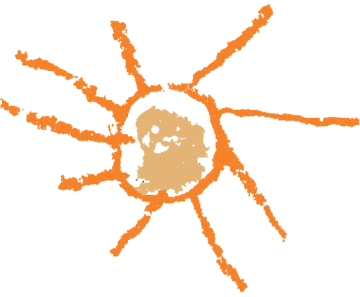
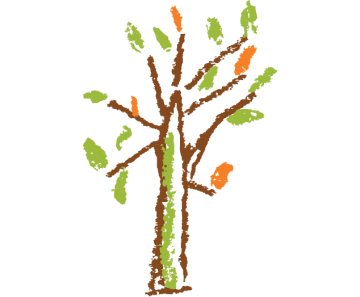

Câu chuyện NIDO
Nếu hỏi độ tuổi nào là sự phát triển của một con người là căn cơ và bùng nổ nhất, câu trả lời là từ
0-6 tuổi. Quan niệm truyền thống từ một đứa trẻ yếu ớt, không có năng lực đã được thay đổi triệt để
bởi các nhà giáo dục trên thế giới, vì một đứa trẻ sinh ra đã có thể học hỏi để sinh tồn chứng minh
trẻ có trí tuệ lớn lao mà tự nhiên đã trao cho. Vậy làm thế nào để một đứa trẻ vừa tiếp nhận văn hóa
nhân loại là nguồn cội vĩ đại được thừa hưởng, vừa tạo ra và làm chủ chính mình trong giai đầu đời
mà không chịu áp lực nhào nặn từ thế giới người lớn? Người lớn chúng ta đã đối xử với trẻ đúng cách
chưa? Như thế nào là hỗ trợ và như thế nào là cản trở sự phát triển của trẻ?
Chúng tôi bắt đầu hành trình giải đáp những băn khoăn của mình bằng cách nghiên cứu các phương pháp
giáo dục tiên tiến trên thế giới. Mỗi phương pháp có một thế mạnh riêng nhưng mỗi người thực hành
giáo dục sẽ cảm thấy kết nối nhất giữa con người mình với phương pháp nào nhất, từ đó chọn ra con
đường mình theo đuổi.
Với chúng tôi, bà Maria Montessori – một nhà giáo dục người Ý – mang lại sự rung động sâu sắc trong
trái tim của những người làm nghề nuôi dạy trẻ về cuộc đời của chính bà và những nguyên lý giáo dục
mà bà đề ra cho đến ngày nay. Những đứa trẻ tự do lớn lên trong tình yêu thương đúng cách của người
lớn như những chú chim non tung cánh trên bầu trời rộng lớn, vì thế “Tổ chim” giống với hình ảnh
ngôi nhà trẻ thơ thân thương của chúng tôi. Từ đó, NIDO (có nghĩa là Tổ chim trong tiếng Ý)
Montessori House of Children ra đời để chào đón các con vào đời!
"The greatest gifts we can give our children are the roots of responsibility and the wings of
independence. " – Maria Montessori
Thay mặt đội ngũ trường NIDO
Tầm nhìn
Trường mầm non NIDO sẽ là một nơi đáng tin cậy, yêu thương giữa gia đình – người làm giáo dục – con trẻ, chung tay vì sự phát triển của con và hành trình đồng hành ý nghĩa của những người lớn quanh con.
Sứ mệnh
Người thầy là người giải phóng tiềm năng cá nhân, vì thế người lớn trong môi trường học tập của con
là những người quan sát khiêm nhường, tinh tế và đam mê, không đúc khuôn trẻ theo những ý muốn thiển
cận của chính mình/ gán cho trẻ điều người thầy muốn mà hướng dẫn trẻ theo nhu cầu và ý nguyện của
trẻ.
Nhà trường luôn tiếp thu và không ngừng hoàn thiện. Chúng tôi học hỏi, phát triển chuyên môn với các cộng đồng giáo dục trong và ngoài nước; đồng thời kết nối chặt chẽ với gia đình vì chúng tôi tin rằng văn hóa và hy vọng dành cho con trẻ của mọi gia đình sẽ mang lại những ý tưởng giá trị cho việc giáo dục trẻ thơ của chúng tôi.
Số 1, Đường Số 14, Khu Phố 5, Phường An Phú, Thành phố Thủ Đức, Thành phố Hồ Chí Minh

info@nido.com.vn
0904 859 864
© Copyright 2023 by NIDO Inc.
Giá trị cốt lõi của NIDO

Tính độc đáo cá nhân
Mỗi đứa trẻ có những đặc điểm và tố chất riêng. Giáo dục tôn trọng tính cá nhân cần “thuận theo
trẻ”, giúp trẻ phát triển các tiềm năng theo tốc độ của riêng mình, “không chín ép”. Ngoài ra, sự
độc đáo cá nhân mang lại tính đa dạng cho nhân loại như trái đất này cần nhiều loài hoa có hình
dạng, màu sắc, hương thơm khác nhau, như là không thể chỉ có mỗi hoa hồng vậy.
Phương pháp Montessori tạo ra môi trường hỗ trợ tính cá nhân. Các con được lựa chọn các hoạt động
cùng học cụ Montessori theo nhu cầu nội tại thôi thúc, vì thế việc học là một hành trình tìm tòi
khám phá một cách chủ động. Trẻ học vì một mong muốn và niềm vui thuần khiết là hiểu biết chính mình
và thế giới xung quanh chứ không chịu áp lực ngoại tại từ người lớn, điều mà giáo dục thực chất luôn
theo đuổi.
“The child who has never learned to work by himself, to set goals for his own acts, or to be the master of his own force of will is recognizable in the adult who lets others guide him and feels a constant need for the approval of others.”

Ý chí mạnh mẽ
“Work/ công việc” là thuật ngữ quan trọng hàng đầu trong phương pháp Montessori. Hẳn là có nhiều
thắc mắc trẻ con chưa gì đã làm việc rồi mà không được vui chơi à? Trẻ trong những ngôi trường
Montessori sẽ dành 2-3 giờ chỉ để tập trung làm việc. Thực là làm việc ở đây là học thông qua tương
tác với các học cụ, nhưng vì tính chất tập trung, chuyên tâm, kiên trì, nhẫn nại, cần mẫn trong mỗi
hoạt động Montessori mà bà Maria gọi nó là “công việc”. Vì thế, các hoạt động này chuẩn bị cho trẻ
một ý chí mạnh mẽ, một nội tâm và nội lực vững vàng để trưởng thành được gọi là “các hoạt động có
tính phát triển”, như loài người phải làm việc/ lao động thì mới tiến tới văn minh.
“Help me do it myself”.
Kết nối với tự nhiên và con người
Tình yêu thương và lòng tử tế trong hành xử với tự nhiên và mọi người xung quanh bắt nguồn từ lòng
biết ơn với những gì mình có và lòng tin vào những điều tốt đẹp để muốn bảo vệ nó. “Ngôi nhà trẻ
thơ/ House of Children” nuôi dưỡng những đứa trẻ tôn trọng thiên nhiên, biết chăm sóc môi trường
sống và hành xử hòa ái với nhau. “Giáo dục vì hòa bình” theo Montessori còn nhấn mạnh sự đồng cảm
giữa các dân tộc hướng tới giải quyết những vấn nạn xã hội chung của nhân loại; trẻ sẽ tiếp cận và
sớm hình thành ý thức về xã hội để có thể kiến tạo một xã hội tốt đẹp hơn.
“The child is both a hope and a promise for mankind”.
THAY MẶT ĐỘI NGŨ TRƯỜNG NIDO
Trường mầm non NIDO hỗ trợ trẻ kiến tạo nên nhân cách của chính mình trong giai đoạn phát triển quan trọng nhất của một con người bằng ý chí tự lập và trong sự tự do; thụ đắc và sáng tạo tri thức một cách thực thụ; và sống hạnh phúc với nội tâm vững chãi thông qua phương pháp Montessori uy tín toàn cầu.
Cô. Nguyễn Hồng Kim Ngọc (Ms. Ríu Rít)
Nhà sáng lập NIDO
(Tốt nghiệp Thạc sỹ Giáo dục tại Anh, Thạc sỹ giảng dạy Bậc mầm mon và tiểu học tại Úc, Hoàn
thành khóa học Montessori 3-6 tuổi của IMC
Sách đã dịch “Dạy triết cho trẻ em”, Sách nghiên cứu “Sư phạm khai phóng – Thế giới, Việt Nam và tôi)